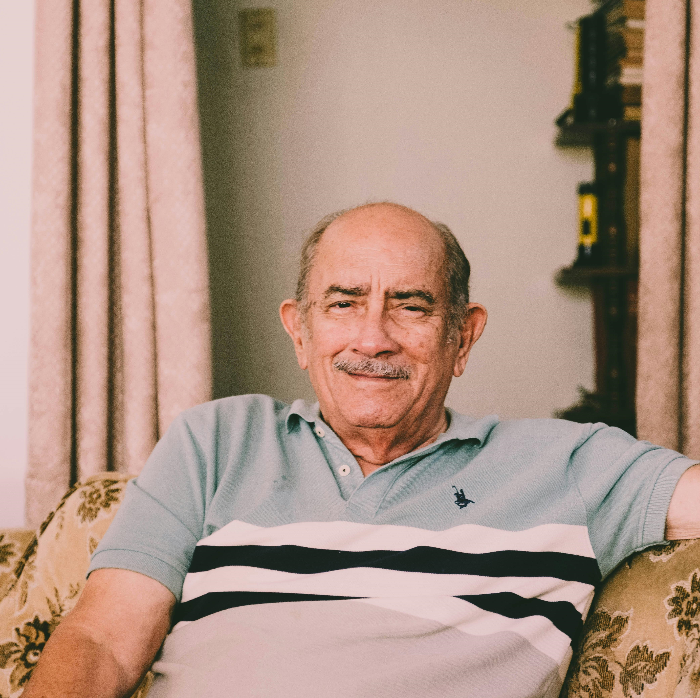

Participantes
-
Ana Martínez
Emocionada de presentar su creación estrella: 'Risotto de mariscos con infusión de azafrán y limón', inspirado en los recuerdos de las vacaciones de verano en la costa.
-
Javier García
Invita a los vecinos a probar un solomillo de ternera, tierno y jugoso, acompañado de una seductora reducción de vino tinto que realza la profundidad de sus sabores. El plato se completa con un puré de patatas ahumado.
-
María Rodríguez
Presenta su exquisito salmón glaseado, donde la dulzura de la miel se encuentra con la intensidad de la salsa de soja, creando una sinfonía de sabores en cada bocado. Acompañado por un puré de coliflor al curry.
-
Alejandro Martínez
Nos sorprende con su tartar de atún, una explosión de frescura y sabor donde el delicado atún se combina con la cremosidad del aguacate y la vibrante vinagreta de jengibre y cilantro.
-
Laura Pérez
Presenta su auténtico plato de raviolis rellenos, donde la suavidad de la ricotta se encuentra con la frescura de las espinacas, envueltas en una delicada pasta casera. En salsa de tomate casera y aromatizada con albahaca.
-
Marta Sánchez
Nos invita a disfrutar de su deliciosa pechuga de pollo a la parrilla, marinada en especias y jugosidad, realzada por una exótica salsa de mango. Acompañada por una guarnición de quinoa y vegetales asados.